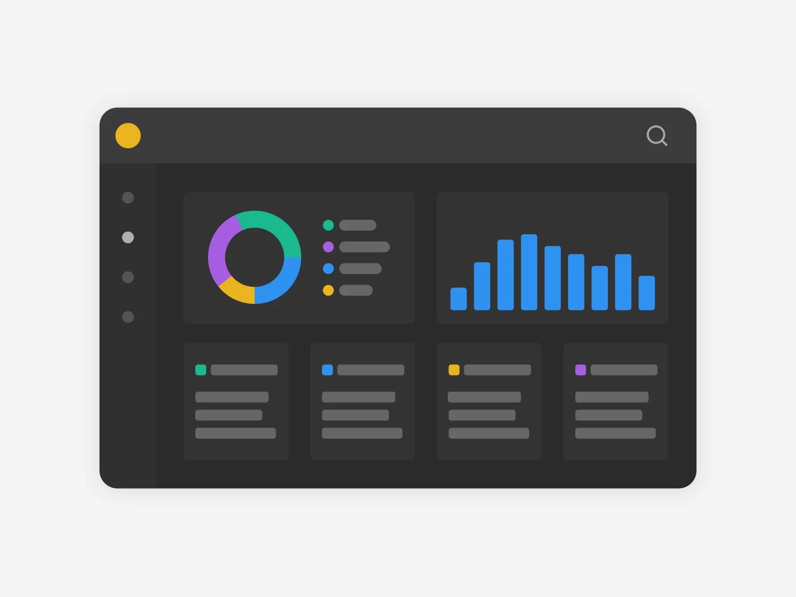
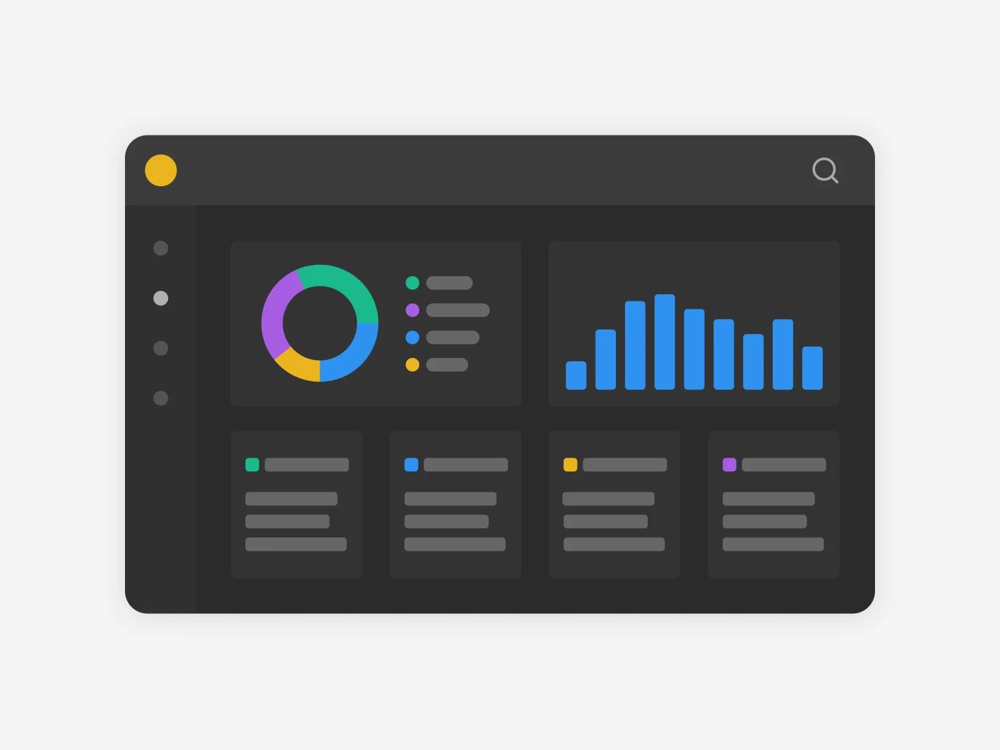

Tarefas completadas Total: 50 Lista de Tarefas Status: Todos Concluída Em anadamento Cancelada Limpar tudo Listar Configurações do perfil Segurança Interface Configurações adicionais Sua foto de perfil Mude a aparência do seu sistema de lista de tarefas Foto de perfil Customize ação da foto de perfil do menu principal Preferência de interface Customize a aparência da sua interface  Preferência de cor do menu Customize a aparência do menu principal Estilo de fonte Customize o estilo da fonte para textos e cabeçalhos Aa Aa Aa Configurações adicionais
Mude a aparência do seu sistema de lista de tarefas Foto de perfil Customize ação da foto de perfil do menu principal Preferência de interface Customize a aparência da sua interface  Preferência de cor do menu Customize a aparência do menu principal Estilo de fonte Customize o estilo da fonte para textos e cabeçalhos Aa Aa Aa